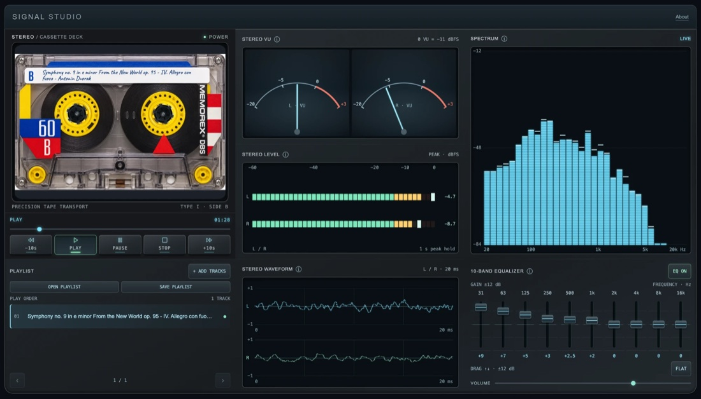

A sound lab for physics class, built around your own music. Play any song and see its sound as numbers and graphs: loudness in decibels, the shape of the wave, and which frequencies it is made of. Change the equalizer and watch every display respond. Each display comes with a guide to the physics behind it.

Signal Studio on a Mac. On narrower windows the panels rearrange into two columns or one.
Signal Studio is not just a music player: it is a set of measuring instruments for sound, the kind found in a recording studio, with explanations. Each display has an ⓘ button that opens a guide in its own window, next to the player, so students can keep listening while they read.
An honest limit, which is a lesson too: the meters measure the digital signal, not the sound in the room. Signal Studio can't tell how loud your speakers are without a calibrated microphone. The VU meter is livelier than a real VU instrument, and the two waveforms are aligned separately, so they can't show the delay between the channels.
.signalplaylist file and Open playlist brings it back, handy for preparing the examples for a lesson. It stores where the files are, not copies of them, so keep the music where it was (or move it together with the playlist).Inspired by the realistic cassette animations of Casse-o-player by Valentyn Vieshchunov, with more player ideas from Fab2. Uses the Caveat font (SIL Open Font License) and Lucide icons (ISC License). Written with the help of OpenAI Codex.
Signal Studio collects no personal data and doesn't upload your music. It only plays the files you choose. It connects to the internet only if you click a reference link in a guide, which opens in your browser. Its equalizer and volume settings are kept on your computer.
SignalStudio-win-x64.exe. It is an installer: you can choose the folder, and it adds a desktop and Start menu shortcut.
The app isn't signed with a paid certificate, so Windows may show “Windows protected your PC”. Click More info, then Run anyway..dmg and drag Signal Studio into Applications.
The app isn't signed with a paid Apple Developer ID, so the first time macOS may block it. Open System Settings → Privacy & Security and click Open Anyway.This software is free and is provided “as is”, without warranty of any kind. The author is not liable for any claim, damages or other liability arising from its use.
Scroll to the end of the license to continue.
The source code is public: desktop-apps/signal-studio on GitHub.